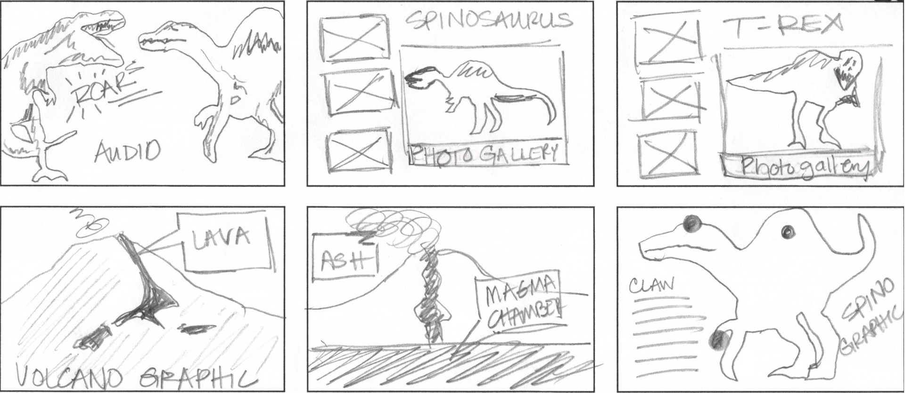

How to plan out your story
A lot of thought goes into creating a multimedia story. What is the story about? What types of multimedia will help you tell the story? Where should things like photos or videos go? This section will help you figure those things out!
1
Establish the narrative arc
Beginning
- T-Rex meets spinosaurus, the largest of all known dinosaurs.
- T-Rex is jealous of spinosaurus and decides to fight with him.
- While they are fighting, there is a big boom in the distance!
Middle
- The volcano is erupting and they must run for safety.
- While they are running, T-Rex gets stuck between two trees.
End
- Spinosaurus saves T-Rex by pushing him out of the brush.
- T-Rex and spinosaurus become friends.
2
Brainstorm ways to use multimedia to tell your story.
Photos or Illustrations
- Photo gallery of T-Rex pictures/illustrations
- Photo gallery of Spinosaurus pictures/illustrations
- Illustrations of a volcano erupting
Audio
- Dinosaurs roaring
- Giant feet running through the brush
- Volcano erupting
- T-Rex struggling when he's stuck
- Narration
Video
- Stop-motion video: Take pictures of toy dinosaurs in various poses and then put them together in a slideshow
- Act the parts: Dress your friends up like dinosaurs and record them acting out a part of the story
- Puppet Pals: Make illustrations of your dinos and the seeting. Then, import them into the Puppet Pals app on your iPad and record an animation
- Wikimedia Commons:Visit Wikimedia Commons and find a royalty-free video of a volcano eruption
Information Graphics
- Diagram a volcano eruption
- Diagram the size, shape and anatomy of a spinosaurus
- Diagram the size, shape and anatomy of a T-Rex
Text
- Finish writing your story. Add details that make the story come to a conclusion.
- What do the dinos say to each other?
- What is the setting like? How hot is it?
- What are the sounds of the forest?
3
Sketch it out
Sketch storyboards of the multimedia parts of the story to plan how they will unfold.

4
Begin creating the multimedia assets for your story.
- Take photos and video using a smartphone, iPad, iPod or digital camera.
- Make illustrations with crayons, markers or colored pencils. Digitize them with a PDF scanner, or take pictures of them and put them on the device you're using to edit.
- Make information graphics using PowerPoint
- Collect audio using the Audio Memo app on a smartphone, iPad or iPod